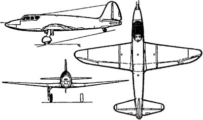

Истребитель-перехватчик «302»
У создателей истребителя с жидкостным ракетным двигателем «БИ» имелись конкуренты в самом РНИИ. Еще до войны в Реактивном институте была начались работы по проектированию истребителя с необычной силовой установкой, состоявшей из одного разгонного ЖРД и двух прямоточных воздушно-реактивных двигателей с прямоугольными управляемыми соплами под крылом. Таким был самолет по проекту 1940 года, задуманный как первый в мире истребитель с составной реактивной группой.
Тут нужно сделать отступление и отметить, что в РНИИ имелся довольно мощный задел по конструированию прямоточных воздушно-реактивных двигателей (ПВРД). Еще во времена ГИРДа в составе Группы работала так называемая «третья» бригада под руководством талантливого конструктора Юрия Александровича Победоносцева.
Опираясь на теорию воздушно-реактивных двигателей, созданную академиком Борисом Стечкиным, третья бригада ГИРДа вплотную подошла к практическому воплощению этих идей, запустив 15 апреля 1933 года первую действующую модель ПВРД.
Как известно, прямоточные двигатели начинают работать только на очень большой скорости, когда воздух, входящий в горючую смесь, сжимается вследствие напора встречного потока воздуха. Как же разогнать двигатель до большой скорости? В бригаде нашли очень интересный прием: вмонтировали миниатюрный воздушно-реактивный двигатель в артиллерийский снаряд и выстреливали его из пушки. Развив большую скорость, двигатель включался и развивал тягу, величину которой определяли по прибавке дальности у снаряда с двигателем в сравнении с обычным.
Конструктивно двигатель в снаряде, получивший обозначение «Объект ГИРД-08», выглядел так. В специальный канал, сделанный в теле снаряда, закладывалось горючее — фосфор. Сверху ой заливался лаком, чтобы сам собой не воспламенялся (фосфор ведь самовозгорается на воздухе). А чтобы в полете очистить горючее от защитной пленки, в канал вставляли металлический ежик. При выстреле из орудия снаряд летел вперед, а ежик, сдирая пленку, — назад. Фосфор вспыхивал, и двигатель включался в работу.
На основе опытов Победоносцева его ученик — инженер Иван Меркулов создал двухступенчатую ракету с ПВРД, получившую обозначение «Р-3». В качестве горючего для этой необычной ракеты использовались шашки, состоявшие из смеси алюминиевого и магниевого порошков. В двигатель ракеты заряжались две кольцеобразные шашки с одинаковым внешним, но с различным внутренним диаметрами, благодаря чему обеспечивался требуемый профиль канала, по которому из диффузора поступал необходимый для их горения воздух. Всего было изготовлено 16 ракет «Р-3»; первая из них стартовала в феврале 1939 года. Для определения параметров траектории впервые была приглашена бригада астрономов с аппаратурой, используемой при слежении за метеоритами.
Таким образом, для инженеров РНИИ прямоточные воздушно-реактивные двигатели были не в новинку. Только теперь для их разгона до рабочей скорости предлагалось использовать жидкостный ракетный двигатель простой схемы.
Согласно проекту, ракетный истребитель НИИ-3, получивший рабочее обозначение «302», должен был иметь деревянную конструкцию, крыло и оперение — с фанерной обшивкой, фюзеляж — монокок. Первый вариант силовой установки (ЖРД и 2 ПВРД) предполагал наибольшую скорость — 900 км/ч, потолок — 9000 метров и время набора предельной высоты — 2 минуты. При боезапасе к 4 пушкам в 400 снарядов, запасе горючего в 505 килограммов и окислителя 1230 килограммов, взлетная масса самолета должна была составить 3358 килограммов.
Весной 1941 года проект истребителя с комбинированной силовой установкой был доложен и утвержден на Техсовете института. Во второй половине 1942 года Андрей Костиков ознакомил с проектом члена ГКО Климента Ворошилова. В тот же день на приеме у Сталина проект «302» был утвержден, а сам Костиков был назначен Главным конструктором ОКБ-55 и директором опытного завода. Начальником ОКБ стал авиаконструктор Матус Рувимович Бисноват, а аэродинамическими расчетами ведал Михаил Тихонравов.
К весне 1943 года выявилось отставание от графика с выпуском прямоточных ВРД конструкции инженера Зуева: они были закончены лишь в виде моделей в половину натуральной величины и полных испытаний не проходили. Жидкостный ракетный двигатель конструкции Душкина «Д-1А-1100» тягой 1100 килограммов с дополнительной камерой на 450 килограммов также еще не был готов и его огневые испытания только начинались.
Из-за неготовности двигателей было принято решение испытать истребитель в планерном варианте, получившем обозначение «302П». С самолета сняли вооружение и некоторое оборудование, а в хвостовой части фюзеляжа поставили макет однокамерного ЖРД под обтекателем. В конце августа 1943 года он поступил на испытания в Летно-исследовательский институт.

Эти испытания выявили не вполне удовлетворительные характеристики устойчивости, и планер «302П» отправили в ЦАГИ, где испытали в натурной аэродинамической трубе.
После доработок самолет был всесторонне изучен в нескольких десятках полетов на буксире за «Ту-2» и «В-25». По оценке летчика-испытателя Сергея Анохина, планер «302П» был исключительно устойчив и управляем по всем осям, хорошо скользил, выполнял «бочки», был прост на посадке после отцепки от буксировщика. Марк Галлай, летавший на «302П», называл машину «эталоном». Установленная на испытаниях посадочная скорость 115–120 км/ч отвечала нормальному режиму посадки перехватчика.
Однако до испытаний с двигателями дело так и не дошло. Работы по теме были свернуты, поскольку двигателисты не смогли создать ПВРД с расчетными характеристиками.